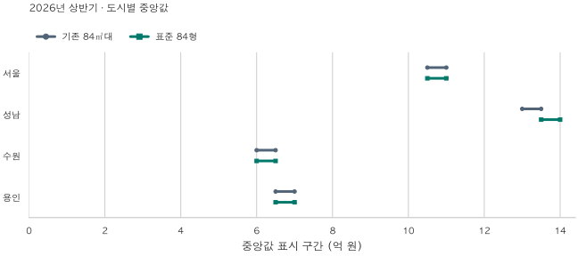
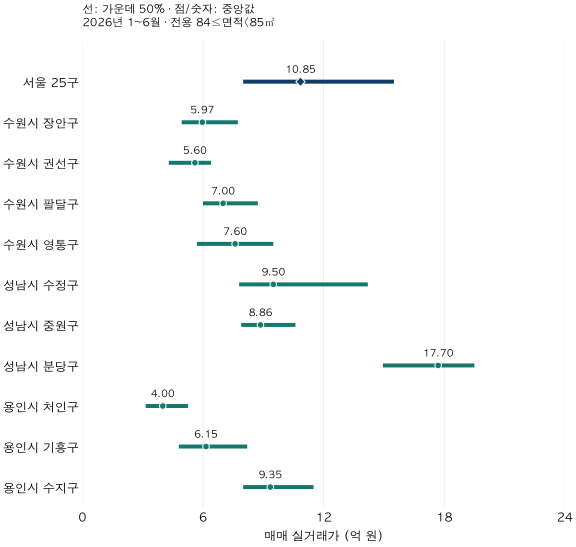

경기도 도시 비교 · 같은 84㎡의 다른 구성
수원·용인·성남 84㎡ 아파트 가격 비교: 10개 구와 연식의 차이
2026년 상반기 수원·용인·성남 10개 구의 84㎡ 실거래 중앙값과 가격 분포를 비교합니다. 서울 대비 비율, 연식 구성과 표본 부족까지 함께 확인하세요.
분석 기간 · 2026년 1~6월 계약 | 자료 기준일 · 2026-10-04
수원·용인·성남의 아파트를 함께 찾아볼 때 도시 이름 하나만으로 예산을 정해도 될까요? 2026년 상반기 전용 84㎡대 매매를 보면 도시 중앙값은 수원 6억 3,000만 원, 용인 6억 9,000만 원, 성남 13억 4,250만 원입니다. 하지만 용인 안에서도 처인구 4억 원과 수지구 9억 3,500만 원은 크게 다릅니다. 도시 전체 값 다음에는 구와 거래된 주택의 연식을 함께 확인해야 합니다.
면적 기준을 넓히면 세 도시의 비교가 달라질까요?
비교 기준: 59형은 전용 17·18평형, 84형은 전용 25·26평형입니다(정확한 범위와 예외). 같은 계약 기간에서 면적 선택만 비교했으며, 전후 시점의 가격 변화가 아닙니다. 아래 범위는 0.5억 원 단위의 표시 구간으로, 왼쪽 이상·오른쪽 미만입니다. 신뢰구간이나 실제 매물 호가가 아닙니다.
성남의 2026년 상반기 중앙값은 기존 84㎡대의 13.0~13.5억 원에서 표준 84형의 13.5~14.0억 원 구간으로 달라집니다. 수원은 6.0~6.5억 원, 용인은 6.5~7.0억 원 구간으로 두 기준이 같습니다. 면적을 넓힌 영향이 도시마다 같지 않습니다.
성남 안에서도 분당구 중앙값은 두 기준 모두 17.5~18.0억 원 구간입니다. 도시 합산의 표시 구간이 달라졌다는 이유로 모든 구의 주택가격이 같은 방향으로 변했다고 말할 수 없습니다. 구별 가격과 거래 구성의 영향을 따로 확인해야 합니다.
아래의 연식 비교까지 좁히면 미공개 항목도 늘어납니다. 세 도시의 단일 순위보다 내 생활권에 해당하는 구·연식·면적의 교집합부터 살펴보세요.

| 비교 대상 | 계약 기간 | 새 면적 기준 | 지표 | 기존 1㎡ 폭 | 표준 면적 묶음 | 새 기준 표본 |
|---|---|---|---|---|---|---|
| 서울 | 2026 상반기 | 84형 | 하위 25% | 8.0~8.5 | 7.5~8.0 | 40건 이상 |
| 서울 | 2026 상반기 | 84형 | 중앙값 | 10.5~11.0 | 10.5~11.0 | 40건 이상 |
| 서울 | 2026 상반기 | 84형 | 상위 25% | 15.5~16.0 | 15.5~16.0 | 40건 이상 |
| 성남 | 2026 상반기 | 84형 | 하위 25% | 8.5~9.0 | 8.5~9.0 | 40건 이상 |
| 성남 | 2026 상반기 | 84형 | 중앙값 | 13.0~13.5 | 13.5~14.0 | 40건 이상 |
| 성남 | 2026 상반기 | 84형 | 상위 25% | 17.5~18.0 | 17.5~18.0 | 40건 이상 |
| 수원 | 2026 상반기 | 84형 | 하위 25% | 5.0~5.5 | 5.0~5.5 | 40건 이상 |
| 수원 | 2026 상반기 | 84형 | 중앙값 | 6.0~6.5 | 6.0~6.5 | 40건 이상 |
| 수원 | 2026 상반기 | 84형 | 상위 25% | 8.0~8.5 | 8.0~8.5 | 40건 이상 |
| 용인 | 2026 상반기 | 84형 | 하위 25% | 4.5~5.0 | 4.5~5.0 | 40건 이상 |
| 용인 | 2026 상반기 | 84형 | 중앙값 | 6.5~7.0 | 6.5~7.0 | 40건 이상 |
| 용인 | 2026 상반기 | 84형 | 상위 25% | 9.0~9.5 | 9.0~9.5 | 40건 이상 |
도시·구·연식별 비교 30행 보기
| 비교 대상 | 계약 기간 | 새 면적 기준 | 지표 | 기존 1㎡ 폭 | 표준 면적 묶음 | 새 기준 표본 |
|---|---|---|---|---|---|---|
| 성남시 분당구 | 2026 상반기 | 84형 | 하위 25% | 14.5~15.0 | 14.5~15.0 | 40건 이상 |
| 성남시 분당구 | 2026 상반기 | 84형 | 중앙값 | 17.5~18.0 | 17.5~18.0 | 40건 이상 |
| 성남시 분당구 | 2026 상반기 | 84형 | 상위 25% | 19.5~20.0 | 19.5~20.0 | 40건 이상 |
| 성남시 수정구 | 2026 상반기 | 84형 | 하위 25% | 7.5~8.0 | 7.5~8.0 | 40건 이상 |
| 성남시 수정구 | 2026 상반기 | 84형 | 중앙값 | 미공개 | 미공개 | 공개 기준 미충족 |
| 성남시 수정구 | 2026 상반기 | 84형 | 상위 25% | 미공개 | 14.5~15.0 | 40건 이상 |
| 성남시 중원구 | 2026 상반기 | 84형 | 하위 25% | 7.5~8.0 | 7.0~7.5 | 40건 이상 |
| 성남시 중원구 | 2026 상반기 | 84형 | 중앙값 | 8.5~9.0 | 8.5~9.0 | 40건 이상 |
| 성남시 중원구 | 2026 상반기 | 84형 | 상위 25% | 미공개 | 10.0~10.5 | 40건 이상 |
| 수원시 권선구 | 2026 상반기 | 84형 | 하위 25% | 4.0~4.5 | 4.0~4.5 | 40건 이상 |
| 수원시 권선구 | 2026 상반기 | 84형 | 중앙값 | 5.5~6.0 | 5.5~6.0 | 40건 이상 |
| 수원시 권선구 | 2026 상반기 | 84형 | 상위 25% | 6.0~6.5 | 6.0~6.5 | 40건 이상 |
| 수원시 영통구 | 2026 상반기 | 84형 | 하위 25% | 미공개 | 미공개 | 공개 기준 미충족 |
| 수원시 영통구 | 2026 상반기 | 84형 | 중앙값 | 미공개 | 미공개 | 공개 기준 미충족 |
| 수원시 영통구 | 2026 상반기 | 84형 | 상위 25% | 미공개 | 미공개 | 공개 기준 미충족 |
| 수원시 장안구 | 2026 상반기 | 84형 | 하위 25% | 4.5~5.0 | 4.5~5.0 | 40건 이상 |
| 수원시 장안구 | 2026 상반기 | 84형 | 중앙값 | 5.5~6.0 | 5.5~6.0 | 40건 이상 |
| 수원시 장안구 | 2026 상반기 | 84형 | 상위 25% | 7.5~8.0 | 7.5~8.0 | 40건 이상 |
| 수원시 팔달구 | 2026 상반기 | 84형 | 하위 25% | 6.0~6.5 | 5.5~6.0 | 40건 이상 |
| 수원시 팔달구 | 2026 상반기 | 84형 | 중앙값 | 7.0~7.5 | 6.5~7.0 | 40건 이상 |
| 수원시 팔달구 | 2026 상반기 | 84형 | 상위 25% | 8.5~9.0 | 8.5~9.0 | 40건 이상 |
| 용인시 기흥구 | 2026 상반기 | 84형 | 하위 25% | 4.5~5.0 | 4.5~5.0 | 40건 이상 |
| 용인시 기흥구 | 2026 상반기 | 84형 | 중앙값 | 6.0~6.5 | 6.0~6.5 | 40건 이상 |
| 용인시 기흥구 | 2026 상반기 | 84형 | 상위 25% | 8.0~8.5 | 8.0~8.5 | 40건 이상 |
| 용인시 수지구 | 2026 상반기 | 84형 | 하위 25% | 8.0~8.5 | 7.5~8.0 | 40건 이상 |
| 용인시 수지구 | 2026 상반기 | 84형 | 중앙값 | 9.0~9.5 | 9.0~9.5 | 40건 이상 |
| 용인시 수지구 | 2026 상반기 | 84형 | 상위 25% | 11.5~12.0 | 11.5~12.0 | 40건 이상 |
| 용인시 처인구 | 2026 상반기 | 84형 | 하위 25% | 3.0~3.5 | 3.0~3.5 | 40건 이상 |
| 용인시 처인구 | 2026 상반기 | 84형 | 중앙값 | 4.0~4.5 | 4.0~4.5 | 40건 이상 |
| 용인시 처인구 | 2026 상반기 | 84형 | 상위 25% | 5.0~5.5 | 5.0~5.5 | 40건 이상 |
| 비교 대상 | 계약 기간 | 새 면적 기준 | 지표 | 기존 1㎡ 폭 | 표준 면적 묶음 | 새 기준 표본 |
|---|---|---|---|---|---|---|
| 서울 · 0–9년 | 2026 상반기 | 84형 | 중앙값 | 미공개 | 미공개 | 공개 기준 미충족 |
| 서울 · 10–19년 | 2026 상반기 | 84형 | 중앙값 | 12.0~12.5 | 12.0~12.5 | 40건 이상 |
| 서울 · 20년 이상 | 2026 상반기 | 84형 | 중앙값 | 9.0~9.5 | 9.0~9.5 | 40건 이상 |
| 성남 · 0–9년 | 2026 상반기 | 84형 | 중앙값 | 13.0~13.5 | 13.0~13.5 | 40건 이상 |
| 성남 · 10–19년 | 2026 상반기 | 84형 | 중앙값 | 미공개 | 미공개 | 공개 기준 미충족 |
| 성남 · 20년 이상 | 2026 상반기 | 84형 | 중앙값 | 미공개 | 미공개 | 공개 기준 미충족 |
| 수원 · 0–9년 | 2026 상반기 | 84형 | 중앙값 | 미공개 | 미공개 | 공개 기준 미충족 |
| 수원 · 10–19년 | 2026 상반기 | 84형 | 중앙값 | 미공개 | 미공개 | 공개 기준 미충족 |
| 수원 · 20년 이상 | 2026 상반기 | 84형 | 중앙값 | 5.0~5.5 | 5.0~5.5 | 40건 이상 |
| 용인 · 0–9년 | 2026 상반기 | 84형 | 중앙값 | 8.5~9.0 | 8.5~9.0 | 40건 이상 |
| 용인 · 10–19년 | 2026 상반기 | 84형 | 중앙값 | 6.0~6.5 | 6.0~6.5 | 40건 이상 |
| 용인 · 20년 이상 | 2026 상반기 | 84형 | 중앙값 | 6.0~6.5 | 6.0~6.5 | 40건 이상 |
면적 기준 재분석의 자료와 공개 범위
기존 글과 같은 2026년 10월 4일 기준 자료에서 면적 묶음을 다시 골랐습니다. 계약 한 건을 같은 비중으로 세고 분위수를 계산했으며, 계약·지역·면적·가격·정제 상태와 집계값을 별도 경로로 대조했습니다. 구별·연식별 조건은 표에 표시했습니다.
가격은 40건 이상·2개 이상 단지를 기본으로 하며, 순위와 공통 단지 비교에는 10개 이상 단지를 요구했습니다. 표시 구간과 분위수 양쪽에도 충분한 거래가 있어야 합니다. 새로 포함되거나 빠지는 소수 거래를 기존 공개값과 결합해 좁혀 읽을 수 있는 비교는 함께 가렸습니다. 따라서 미공개는 거래가 없거나 가격이 낮다는 뜻이 아닙니다.
새로운 정확 건수·금액 합계·평균은 공개하지 않고 가격 범위와 표본 충족 여부만 제공합니다. 개인이나 개별 거래를 확인하는 자료가 아닙니다. 면적 기준 비교 집계(JSON)에서 전체 범위를 확인할 수 있습니다. 아래에 이어지는 기존 그림과 정밀 수치는 당시의 1㎡ 폭 분석이며 새 표와 면적 기준이 다릅니다.
수원·용인·성남의 어디까지 비교했나요?
수원은 장안·권선·팔달·영통 4개 구, 용인은 처인·기흥·수지 3개 구, 성남은 수정·중원·분당 3개 구를 모두 포함합니다. 결과가 높은 구만 고르지 않고 처음 정한 10개 구를 같은 조건으로 비교했습니다. 세 도시가 경기 남부 전체를 대표하는 것은 아닙니다.
집계는 현재 단지 정보의 구 단위 지역을 따릅니다. 분당구 전체를 분당신도시로, 영통구 전체를 광교로 바꾸어 읽으면 비교 대상이 달라집니다. 특히 성남시의 법정동 표에서도 분당구에는 분당동뿐 아니라 판교동·삼평동·백현동 등이 함께 들어 있습니다. 이 글은 신도시 경계를 따로 그려 집계하지 않았습니다.
모든 가격의 계약 기간은 2026년 1~6월, 면적은 전용 84.00㎡ 이상 85.00㎡ 미만(84㎡대)입니다. 이 블로그의 표준 84형(전용 25·26평형)보다 좁은 범위여서 오래된 단지가 덜 들어갑니다(용어집). 공급면적 34평과도 다릅니다. 최근 9월 자료까지 일부 존재하지만 신고가 뒤늦게 더해질 수 있어 앞선 지역 비교와 같은 상반기를 유지했습니다. 이 상반기 역시 당시 실시간 화면을 복원한 자료는 아닙니다.
세 도시의 중앙값은 서울의 몇 %일까요?
같은 기간·면적의 서울 25개 구 매매 11,378건 중앙값은 10억 8,500만 원입니다. 이를 100으로 두면 수원은 58.1, 용인은 63.6, 성남은 123.7입니다. 비율은 해당 지역 중앙값 ÷ 서울 전체 중앙값 × 100으로 계산했습니다.
| 지역 | 거래 건수 | 하위 25% | 중앙값 | 상위 25% | 서울=100 |
|---|---|---|---|---|---|
| 서울 25구 | 11,378 | 8.00 | 10.85 | 15.50 | 100.0 |
| 수원시 | 2,906 | 5.05 | 6.30 | 8.05 | 58.1 |
| 성남시 | 840 | 8.90 | 13.43 | 17.79 | 123.7 |
| 용인시 | 3,823 | 4.90 | 6.90 | 9.00 | 63.6 |
좁은 화면에서는 표를 좌우로 움직여 볼 수 있습니다. 가격은 소수 둘째 자리, 비율은 첫째 자리로 반올림했습니다. 모든 비율은 반올림 전 값으로 계산했습니다.
도시별 값은 구 중앙값을 평균한 숫자가 아닙니다. 수원 2,906건, 용인 3,823건, 성남 840건을 도시별로 직접 모았습니다. 거래가 많은 구와 단지는 대표값에 더 많이 반영됩니다. 예를 들어 용인 표본의 기흥구는 2,290건으로 약 59.9%를 차지합니다. 모든 구에 같은 비중을 주거나 전체 주택 재고를 세대수로 가중한 결과와는 다릅니다.
서울=100은 가격수준 비교의 기준점입니다. 시계열 가격지수나 상승률이 아니며, 100보다 낮다고 저평가된 것도 아닙니다. 서울 안의 저가·고가 구를 함께 모은 분모이므로 개별 서울 후보와 비교하면 답이 바뀝니다. 광역 분포의 겹침과 서울 25개 구 전체 표는 서울·경기 가격 비교에서 확인할 수 있습니다.
분당·수지·영통은 각 도시를 얼마나 대표할까요?
세 구 모두 해당 도시의 다른 구보다 이 표본의 중앙값이 높지만, 도시 전체를 대신할 수는 없습니다. 아래는 가격순이 아닌 지역 코드 순서이며, 같은 도시의 모든 구를 함께 보여 줍니다. 선은 거래의 가운데 50%, 점은 중앙값입니다. 선 바깥에도 거래가 있습니다.

| 지역 | 거래 건수 | 하위 25% | 중앙값 | 상위 25% | 서울=100 |
|---|---|---|---|---|---|
| 수원시 장안구 | 520 | 4.94 | 5.97 | 7.74 | 55.0 |
| 수원시 권선구 | 1,002 | 4.30 | 5.60 | 6.40 | 51.6 |
| 수원시 팔달구 | 389 | 6.00 | 7.00 | 8.73 | 64.5 |
| 수원시 영통구 | 995 | 5.70 | 7.60 | 9.50 | 70.0 |
| 성남시 수정구 | 209 | 7.80 | 9.50 | 14.20 | 87.6 |
| 성남시 중원구 | 221 | 7.90 | 8.86 | 10.60 | 81.7 |
| 성남시 분당구 | 410 | 14.95 | 17.70 | 19.50 | 163.1 |
| 용인시 처인구 | 468 | 3.15 | 4.00 | 5.26 | 36.9 |
| 용인시 기흥구 | 2,290 | 4.80 | 6.15 | 8.20 | 56.7 |
| 용인시 수지구 | 1,065 | 8.00 | 9.35 | 11.50 | 86.2 |
수원: 영통과 권선의 중앙값 차이는 2억 원입니다
영통구 7.60억 원, 팔달구 7.00억 원, 장안구 5.97억 원, 권선구 5.60억 원입니다. 수원 전체 6.30억 원은 어느 구의 대표 단지를 골랐다는 뜻이 아닙니다. 영통구 안에서도 선의 양끝과 개별 후보를 구분해야 합니다.
용인: 처인·기흥·수지의 세 가격대를 분리해 보세요
처인구 4.00억 원, 기흥구 6.15억 원, 수지구 9.35억 원입니다. 수지와 처인의 중앙값 차이는 5.35억 원으로, 도시 전체 6.90억 원 하나로는 드러나지 않습니다. 다만 이 차이는 통근 편의나 생활 만족의 금전적 가치가 아닙니다. 그런 조건을 측정해 조정한 비교는 하지 않았습니다.
성남: 분당구 값으로 수정·중원을 대신할 수 없습니다
분당구 중앙값은 17.70억 원, 수정구는 9.50억 원, 중원구는 8.86억 원입니다. 성남 전체 13.425억 원과도 다릅니다. 구 경계 안의 단지·연식 구성이 다르므로 ‘성남은 서울보다 비싸다’는 문장만으로 실제 후보를 평가하기 어렵습니다.
세 도시에서 거래된 집의 연식도 비슷할까요?
그렇지 않습니다. 여기서 연식은 계약연도 2026에서 단지 정보의 준공연도를 뺀 값입니다. 예를 들어 2017년 준공은 9년, 2016년 준공은 10년, 2006년 준공은 20년입니다. 정확한 입주일이나 준공 기념일을 계산한 만 나이가 아닙니다.
수원의 20년 이상 거래 비중은 43.9%, 용인은 54.9%, 성남은 53.9%입니다. 구별로 보면 팔달구의 0~9년 비중은 35.7%, 영통구는 15.4%입니다. 영통구 전체 가격이 더 높다는 이유로 이 기간에 신축 거래 비중도 더 컸다고 추론할 수 없습니다.
서울·3개 도시·10개 구의 연식 구성 전체 표 펼치기
| 지역 | 0~9년 | 10~19년 | 20년 이상 | 미상 |
|---|---|---|---|---|
| 서울 25구 | 1,666 (14.6%) | 2,669 (23.5%) | 7,043 (61.9%) | 0 (0.0%) |
| 수원시 | 633 (21.8%) | 998 (34.3%) | 1,275 (43.9%) | 0 (0.0%) |
| 성남시 | 204 (24.3%) | 183 (21.8%) | 453 (53.9%) | 0 (0.0%) |
| 용인시 | 801 (21.0%) | 925 (24.2%) | 2,097 (54.9%) | 0 (0.0%) |
| 수원시 장안구 | 123 (23.7%) | 106 (20.4%) | 291 (56.0%) | 0 (0.0%) |
| 수원시 권선구 | 218 (21.8%) | 377 (37.6%) | 407 (40.6%) | 0 (0.0%) |
| 수원시 팔달구 | 139 (35.7%) | 131 (33.7%) | 119 (30.6%) | 0 (0.0%) |
| 수원시 영통구 | 153 (15.4%) | 384 (38.6%) | 458 (46.0%) | 0 (0.0%) |
| 성남시 수정구 | 83 (39.7%) | 31 (14.8%) | 95 (45.5%) | 0 (0.0%) |
| 성남시 중원구 | 29 (13.1%) | 91 (41.2%) | 101 (45.7%) | 0 (0.0%) |
| 성남시 분당구 | 92 (22.4%) | 61 (14.9%) | 257 (62.7%) | 0 (0.0%) |
| 용인시 처인구 | 197 (42.1%) | 92 (19.7%) | 179 (38.2%) | 0 (0.0%) |
| 용인시 기흥구 | 382 (16.7%) | 659 (28.8%) | 1,249 (54.5%) | 0 (0.0%) |
| 용인시 수지구 | 222 (20.8%) | 174 (16.3%) | 669 (62.8%) | 0 (0.0%) |
이 표는 거래된 주택의 구성입니다. 해당 구에 존재하는 모든 아파트의 연식 비중이나 새로 입주한 가구 수가 아닙니다. 이 표본에서는 연식 미상이 없었지만, 거래되지 않은 주택까지 모두 확인했다는 뜻도 아닙니다. 세 비중을 반올림하면 합계가 100%와 조금 다를 수 있습니다.
같은 연식군으로 좁히면 서울 대비 비율은 어떻게 바뀌나요?
분모도 같은 연식군으로 바꿔야 합니다. 서울의 중앙값은 0~9년 15.85억 원, 10~19년 12.25억 원, 20년 이상 9.30억 원입니다. 이 절의 ‘서울=100’은 앞 절의 서울 전체 10.85억 원을 계속 쓰지 않습니다.
분당구의 0~9년 중앙값은 13.10억 원으로 같은 연식군 서울의 82.6입니다. 반면 20년 이상은 18.45억 원으로 198.4입니다. 전체 연식의 비율 163.1 하나가 모든 연식군을 설명하지는 못합니다. 이 결과를 ‘오래된 집이 더 유리하다’는 규칙으로 읽어서는 안 됩니다. 연식군을 나누면서 비교에 들어온 단지와 위치도 함께 달라졌기 때문입니다.
수지구의 20년 이상 중앙값은 8.70억 원, 영통구는 5.80억 원입니다. 연식군을 좁힌 뒤에도 차이가 남습니다. 하지만 20년과 40년을 같은 군에 넣었고, 층·동네·수리 상태·계약월도 맞추지 않았습니다. 이 표는 구성 차이를 한 단계 더 살펴보는 비교이지 동일 주택의 지역 프리미엄 추정이 아닙니다.
같은 연식군 가격과 서울 대비 비율 42칸 펼치기
| 지역 · 연식 | 거래 건수 | 중앙값 | 같은 연식 서울=100 |
|---|---|---|---|
| 서울 25구 · 0–9년 | 1,666 | 15.85 | 100.0 |
| 서울 25구 · 10–19년 | 2,669 | 12.25 | 100.0 |
| 서울 25구 · 20년 이상 | 7,043 | 9.30 | 100.0 |
| 수원시 · 0–9년 | 633 | 8.57 | 54.1 |
| 수원시 · 10–19년 | 998 | 6.73 | 54.9 |
| 수원시 · 20년 이상 | 1,275 | 5.20 | 55.9 |
| 성남시 · 0–9년 | 204 | 13.30 | 83.9 |
| 성남시 · 10–19년 | 183 | 11.60 | 94.7 |
| 성남시 · 20년 이상 | 453 | 15.00 | 161.3 |
| 용인시 · 0–9년 | 801 | 8.90 | 56.2 |
| 용인시 · 10–19년 | 925 | 6.45 | 52.7 |
| 용인시 · 20년 이상 | 2,097 | 6.30 | 67.7 |
| 수원시 장안구 · 0–9년 | 123 | 10.60 | 66.9 |
| 수원시 장안구 · 10–19년 | 106 | 7.69 | 62.8 |
| 수원시 장안구 · 20년 이상 | 291 | 5.20 | 55.9 |
| 수원시 권선구 · 0–9년 | 218 | 7.10 | 44.8 |
| 수원시 권선구 · 10–19년 | 377 | 5.95 | 48.6 |
| 수원시 권선구 · 20년 이상 | 407 | 4.17 | 44.8 |
| 수원시 팔달구 · 0–9년 | 139 | 8.97 | 56.6 |
| 수원시 팔달구 · 10–19년 | 131 | 6.00 | 49.0 |
| 수원시 팔달구 · 20년 이상 | 119 | 6.50 | 69.9 |
| 수원시 영통구 · 0–9년 | 153 | 10.60 | 66.9 |
| 수원시 영통구 · 10–19년 | 384 | 9.00 | 73.5 |
| 수원시 영통구 · 20년 이상 | 458 | 5.80 | 62.4 |
| 성남시 수정구 · 0–9년 | 83 | 14.35 | 90.5 |
| 성남시 수정구 · 10–19년 | 31 | 가격 미공개 | — |
| 성남시 수정구 · 20년 이상 | 95 | 7.90 | 84.9 |
| 성남시 중원구 · 0–9년 | 29 | 가격 미공개 | — |
| 성남시 중원구 · 10–19년 | 91 | 9.70 | 79.2 |
| 성남시 중원구 · 20년 이상 | 101 | 8.00 | 86.0 |
| 성남시 분당구 · 0–9년 | 92 | 13.10 | 82.6 |
| 성남시 분당구 · 10–19년 | 61 | 18.50 | 151.0 |
| 성남시 분당구 · 20년 이상 | 257 | 18.45 | 198.4 |
| 용인시 처인구 · 0–9년 | 197 | 5.60 | 35.3 |
| 용인시 처인구 · 10–19년 | 92 | 3.89 | 31.8 |
| 용인시 처인구 · 20년 이상 | 179 | 3.10 | 33.3 |
| 용인시 기흥구 · 0–9년 | 382 | 9.00 | 56.8 |
| 용인시 기흥구 · 10–19년 | 659 | 6.27 | 51.2 |
| 용인시 기흥구 · 20년 이상 | 1,249 | 5.20 | 55.9 |
| 용인시 수지구 · 0–9년 | 222 | 12.45 | 78.5 |
| 용인시 수지구 · 10–19년 | 174 | 10.93 | 89.2 |
| 용인시 수지구 · 20년 이상 | 669 | 8.70 | 93.5 |
가격 공개에는 40건 이상과 2개 단지 이상이 필요합니다. 수정구 10~19년 31건, 중원구 0~9년 29건은 건수만 표시하고 가격·비율을 공개하지 않습니다. 표본 부족 칸은 0원이나 서울과 같은 가격이 아닙니다.
가장 중요한 반론: 연식까지 맞춰도 같은 집이 아닙니다
같은 면적·연식군 안에서도 역 접근성, 층, 단지 규모, 수리 상태와 계약월이 다릅니다. 특정 단지가 자주 거래되면 계약 가중 중앙값에 더 많이 들어갑니다. 연식군별 가격차를 보고 신축 효과나 재건축 기대의 금액을 분리할 수는 없습니다. 재건축 사업 단계·권리·추가분담금도 이 집계에는 없습니다.
비교 조건을 다른 반기, 59㎡, 더 세밀한 연식, 특정 동이나 같은 단지로 바꾸면 가격차와 순서가 달라질 수 있습니다. 이 글은 그 모든 조건에서 같은 결론이 유지된다는 검증을 하지 않았습니다. 구의 중앙값을 현재 내 매물의 적정가격이나 대출 심사 시가로 쓰지 마세요.
실제 후보 두 곳은 어떤 순서로 비교하면 좋을까요?
- 도시 이름을 구·동·단지로 좁힙니다. 신도시 이름과 행정구를 혼용하지 않습니다.
- 전용면적과 계약 기간을 맞춥니다. 현재 매물의 호가와 과거 거래 중앙값은 따로 적습니다.
- 연식과 거래 근거를 확인합니다. 같은 연식군 표를 출발점으로 삼고, 후보 단지의 층·수리·최근 거래 건수를 다시 확인합니다.
- 생활 조건과 구입자금을 별도로 비교합니다. 통근·관리비·실제 확인한 대출·이사비용은 지역 가격비율로 대신할 수 없습니다.
자료·공개 기준·독립 검증 방법
자료는 국토교통부 아파트 매매 실거래가 상세 자료를 정제한 보유 관측입니다. 2026년 10월 4일 기준 자료에서 같은 해 1~6월 계약을 골랐습니다. 자료 생성일과 계약 기간, 당시 정보 도착일은 서로 다릅니다. 당시 공개돼 있던 자료나 10월 현재 매물을 복원한 자료가 아닙니다.
해제·직거래를 뺀 정제 기준의 거래를 사용하며 토지임대부를 제외했습니다. 기존 모형가격, 호가, 추정 재고는 섞지 않았습니다. 전용면적 조건은 이 글의 편집상 범위이며 공식 면적 구간 분류의 변경이 아닙니다. 3개 도시 7,569건과 서울 11,378건을 사용했습니다. 도시별 합계와 그 안의 구별 건수를 다시 합치지 않습니다.
각 지역의 하위 25%·중앙값·상위 25%는 거래금액을 직접 정렬한 선형 보간 분위수입니다. 구별 숫자를 평균해서 도시 값을 만들지 않았습니다. 모든 가격 칸에 40건·2개 단지 기준을 적용하고, 연식 미상은 별도로 셌습니다. 연식 세부 건수가 1~9인 칸이 있으면 중첩된 도시·구 전체의 세부 건수와 비중을 함께 숨기는 규칙을 사전에 정했으며, 이번에는 그런 칸이 없었습니다.
같은 원자료를 두 가지 방법으로 따로 계산해 면적 선택·연식 분류·분위수를 모두 대조했습니다. 10개 구 및 서울 전체의 가격은 앞선 서울·경기 글의 동결 수치와도 일치합니다. 14개 지역 범위 × 전체/연식 3군/미상의 70개 집계만 공개하며, 개인별·단지별 거래 행은 공개하지 않습니다. 검증한 공개 집계 파일(JSON)에서 기준과 반올림 전 값을 확인할 수 있습니다.
구 목록과 지리 용어는 수원시 행정구역, 성남시 행정구역, 용인시 구청 조직도를 참고했습니다. 성남시 페이지의 구 면적 표는 2022년 12월 기준이므로 현재 면적 수치를 인용하지 않았습니다. 수원시 안내는 검색 색인에서 구 목록을 확인했으며 본문 직접 접근은 제한됐습니다. 실제 집계 지역은 현재 단지 정보의 지역 코드를 따릅니다. 외부 자료 확인일은 2026년 10월 10일입니다.
분석·집필: 파파펭귄 (Nobot Kang). 에이전트로 집계 대조·표와 그림 생성·문장 검토를 보조했습니다. 지역 선호 순위나 투자 권고를 제공하지 않습니다.